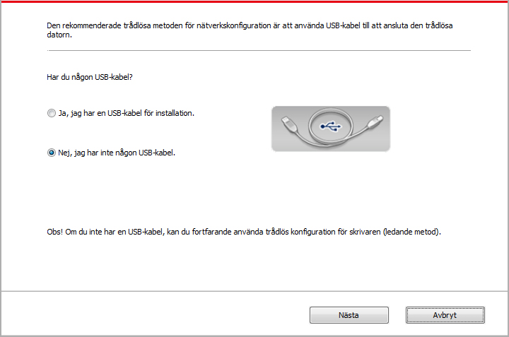
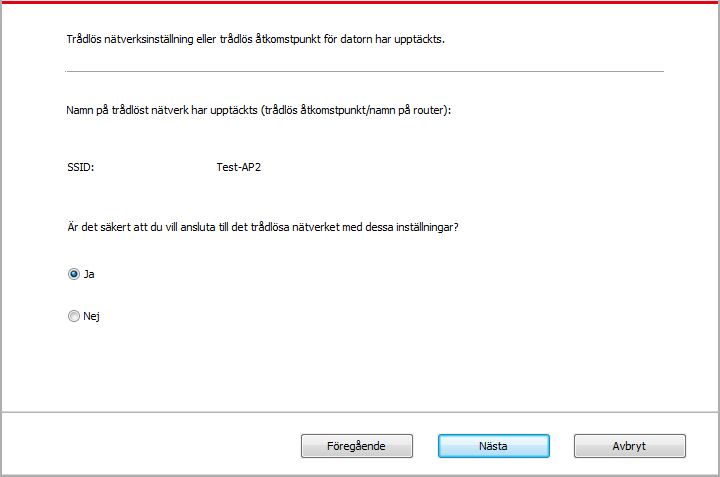
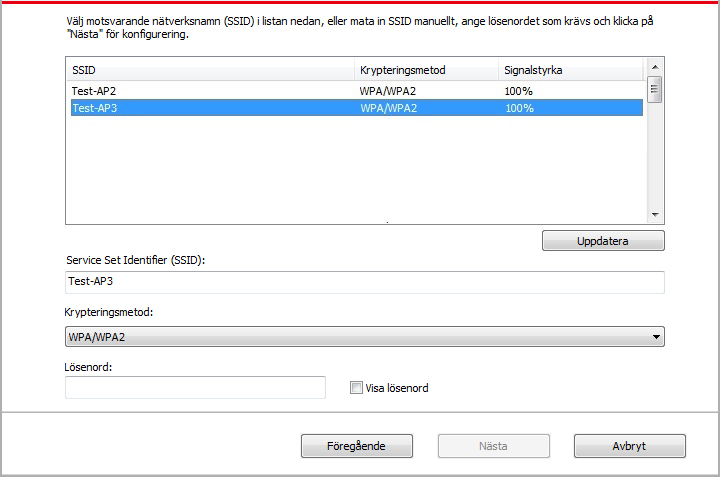
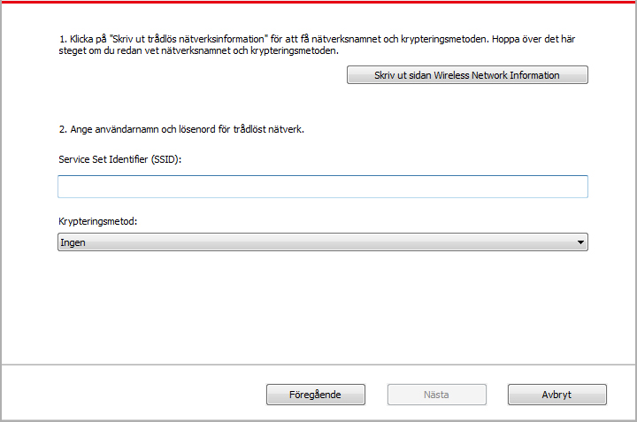
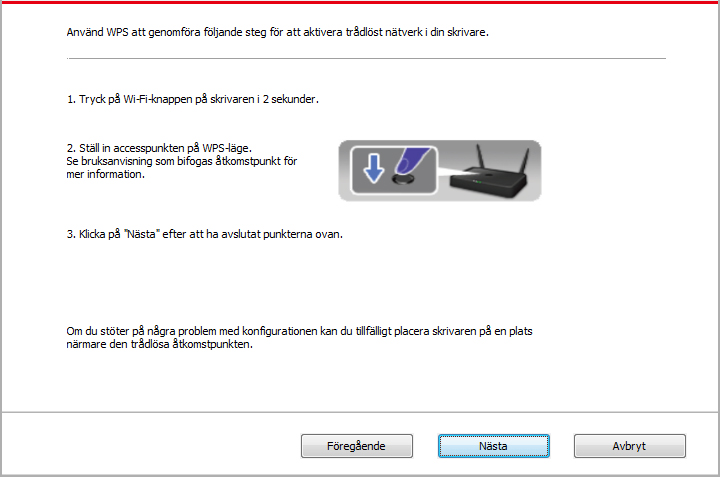
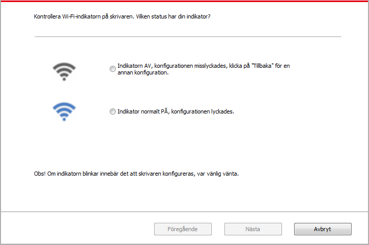

5.Konfiguration av trådlöst nätverk (lämplig för Wi-Fi-datorer)
Beroende på typ, finns det skrivartyp med Wi-Fi-utskriftsfunktion; De trådlösa typerna för nätverksanslutningar för infrastrukturanslutning och Soft-AP stöds. Vanligtvis kan det bara finnas en anslutning mellan datorn och skrivaren. Om du har något problem under den trådlösa nätverksinställningen hänvisas du till vanliga problem i Kapitel 5.3-Trådlös nätverksinställning.
 |
Infrastrukturläge: Anslut till den trådlösa utrustningen via routern 1. Åtkomstpunkt (trådlös router). 2. Trådlös nätverksskrivare. 3. Datorn ansluter till åtkomstpunkten via trådlöst nätverk. 4. Datorn ansluter till åtkomstpunkten via nätverkskabel. |
|
|
Soft-AP Den trådlösa datorn är direkt ansluten till den trådlösa enheten. |

5.1.Infrastrukturläge
Du kan ansluta datorn till skrivaren med hjälp av åtkomstpunkten (trådlös router) som medium. Anslutning av åtkomstpunkten (trådlös router) kan klassificeras till trådlös nätverks konfiguration och Wi-Fi Protected Setup (WPS)-konfiguration.
Viktigt! Innan du installerar det trådlösa nätverket måste du veta nätverksnamnet (SSID) och lösenordet för din åtkomstpunkt (trådlös router), de kommer att användas under konfigurationen av det trådlösa nätverket. Om de inte kan bekräftas, kontakta nätverksansvarig eller tillverkaren av åtkomstpunkten (trådlös router).
5.1.1.Konfigurationsverktyg för trådlöst nätverk
Om din dator har installerat drivrutinen och är ansluten till det trådlösa nätverket, men det trådlösa nätverket ändras kan om konfigurationen utföras via det trådlösa nätverkets konfigurationsverktyg.
5.1.1.1.Tidigare förberedelse
1. Åtkomstpunkt (trådlös router).
2. Dator som redan har anslutit till nätverket.
3. Skrivare med trådlös nätverksfunktion.
5.1.1.2.Konfigurationsmetod med konfigurationsverktyg för trådlöst nätverk
1. Ta fram konfigurationsverktyget för trådlöst nätverk i datorn.
1) Windows-system: klicka på "Start"-menyn-"Alla program"-”Pantum”-"Produktnamn"-"Konfigurationsverktyg för trådlöst nätverk".
2) Mac-system: klicka på "Finder"-menyraden "Go"-"Applikation Program"-”Pantum” - ”Tillbehör”-"Trådlöst nätverkskonfigurationsverktyg".
2. Anslut konfigurationen med hjälp av USB-kabel.
Välj "Ja, jag har USB-kabel som ska användas för installation" i följande gränssnitt. Och klicka på "Nästa steg".

2.1 Datorn har anslutit till det trådlösa nätverket.
1) Konfigurationsverktyget för trådlöst nätverk väljer som standard det trådlösa nätverket som är anslutet till datorn; och konfigurationen kan slutföras enligt anvisningarna i gränssnittet.

 |
Obs! |
• Nätverksnamnet (SSID) som du väljer ska bekräftas av nätverksnamnet (SSID) för åtkomstpunkten (trådlös router) som är ansluten till datorn. |
2) Om annat trådlöst nätverk behöver anslutas, markera "Nej" för att konfigurera andra trådlösa nätverk; och slutför konfigurationen enligt anvisningarna i gränssnittet.

 |
Obs! |
• För närvarande finns tre säkerhetslägen som stöds av skrivaren: Nej, WEP och WPA/WPA2. 1) Nej: inget kryptering används. 2) WEP: Genom att använda WEP (trådlös ekvivalent kryptering), skicka och ta emot data med säkerhetsnyckel. WEP-säkerhetsnyckel är lämplig för 64 och 128 digitala krypteringsnätverk, och siffror och bokstäver kan inkluderas samtidigt. 3) WPA/WPA2: Är en delad säkerhetsnyckel för Wi-Fi-skyddad åtkomst; Den ansluter den trådlösa utrustningen till åtkomstpunkten med hjälp av TKIP eller AES-kryptering (WPS-Personlig). Användarlängden för WPA/WPA2 är delad säkerhetsnyckel med mellan 8 och 63 tecken. • "Visa lösenord" är som standard inte markerat, det ska inte markeras; om det markeras visas lösenordet. |
2.2 Datorn har inte anslutit till det trådlösa nätverket.
Ange nätverksnamnet SSID (SSID, skiftlägeskänsligt) för åtkomstpunkten (trådlös router) och lösenordet i följande gränssnitt; och slutför konfigurationen enligt anvisningarna för gränssnittet.

|
Obs! |
• Om du inte känner till nätverksnamnet (SSID) för åtkomstpunkten (trådlös router) klickar du på "Skriv ut informationssidan för det trådlösa nätverket" för att kontrollera det nödvändiga nätverksnamnet (SSID) för åtkomstpunkten (trådlös router). • Efter att du har slutfört konfigurationen av det trådlösa nätverket, om du inte kan använda skrivaren normalt, ska du återinstallera drivrutinen. |
3. Använd WPS-anslutning.
Välj "Nej, jag har ingen USB-kabel" i följande gränssnitt. Och klicka på "Nästa steg".
1) Använd WPS att genomföra följande steg för att aktivera trådlöst nätverk i din skrivare. (för den specifika WPS-konfigurationen, se Kapitel 5.1.2)

2) Om skrivarens anslutning lyckades kan bedömas av tillståndet på skrivarens Wi-Fi-indikatorlampa. Om konfigurationen misslyckas klickar du på "Senaste steg" för att omkonfigurera; Om konfigurationen lyckats, klicka på "Komplett" för att slutföra konfigurationen.

|
Obs! |
• Efter att du har slutfört konfigurationen av det trådlösa nätverket, om du inte kan använda skrivaren normalt, ska du återinstallera drivrutinen. |
5.1.2.Wi-Fi Protected Setup (WPS)-konfiguration
Om Wi-Fi Protected Setup (WPS) stöds av åtkomstpunkten (trådlös router) kan skrivaren anslutas till det trådlösa nätverket genom att klicka på Wi-Fi-knappen på skrivarens kontrollpanel och WPS-knappen på åtkomst punkten (trådlös router).
5.1.2.1.Tidigare förberedelse
1. Wi-Fi Protected Setup (WPS) som stöds av åtkomstpunkten (trådlös router).
2. Skrivare med trådlös nätverksfunktion.
5.1.2.2.Konfigurationsmetod för Wi-Fi Protected Setup (WPS)
1. Slå på strömmen till skrivaren och åtkomstpunkten (trådlös router).
2. Se till att skrivaren är i färdigt skick.
|
Obs! |
• Om skrivaren går in i viloläge trycker du på valfri knapp på skrivarens kontrollpanel, så att skrivaren kan aktiveras. |
3. Tryck på "Wi-Fi-knappen" på skrivarens kontrollpanel i mer än 2 sekunder tills det blå ljuset på Wi-Fi-lampan blinkar och släpp sedan knappen.
4. Inom 2 minuter, tryck på "WPS-knappen" på åtkomstpunkten (trådlös router) och släpp sedan knappen.
5. Det trådlösa nätverket utförs för åtkomstpunkt (trådlös router) och skrivare, blått ljus på Wi-Fi-lampan på skrivaren blinkar. Efter en lyckad anslutning kommer det blå ljuset på Wi-Fi-lampan på skrivaren att vara på hela tiden.
Om anslutningen inte är etablerad i mer än 2 minuter, kommer skrivaren att återgå till färdigt skick, och Wi-Fi-lampan släcks och Wi-Fi Protected Setup (WPS)-anslutning misslyckas. Om återanslutning krävs, upprepa det tredje och fjärde steget.
|
Obs! |
• Efter lyckad anslutning av Wi-Fi Protected Setup (WPS), om du vill skriva ut via det trådlösa nätverket, installerar du drivrutinen. |
5.1.3.Så här stänger du det anslutna Wi-Fi-nätverket
Avsluta den trådlösa nätverksanslutningen för infrastrukturläge enligt ovanstående steg, och Wi-Fi-lampan på den anslutna kontrollpanelen kommer att vara på hela tiden; Tryck på den här knappen i mer än 2 sekunder för att koppla bort Wi-Fi (Wi-Fi-lampan släcks).
5.2.Wi-Fi hot-point-läge
Du kan inte använda åtkomstpunkten (trådlös router) för att ansluta datorn med trådlös nätverksfunktion till den trådlösa nätverksskrivaren.
5.2.1.Tidigare förberedelse
1. Skrivaren med funktionen Wi-Fi-hot-point.
2. Datorer med trådlös anslutning.
5.2.2.Wi-Fi-Hot anslutning
Aktivera Wi-Fi-Hot på skrivaren innan du ansluter skrivarens Hot. För detta ändamål, logga in på den lagrade webbservern, klicka på ”Inställningar”-”Trådlös inställning”-”Trådlös Hot” för att ange grundläggande status för Hot som ”Aktiverad”.
5.2.3.Konfigurering med Soft-AP
När Wi-Fi Hotspot är aktivt kan terminalanvändare (Station) hitta och ansluta skrivarens Wi-Fi Hotspot genom att söka efter den. Surfpunkten aktiveras som standard och standardlösenordet är "12345678". Specifikt SSID och lösenord för skrivaren finns i rapporten från utskriftsinformationssidan.
5.3.Vanligt problem med trådlös nätverksinställning
1. Skrivaren hittades inte
• Om strömmen till datorn, åtkomstpunkt (trådlös router) eller skrivare är påslagen.
• Om USB-kabel är ansluten mellan dator och skrivare.
• Om den trådlösa nätverksanslutningen stöds av skrivaren.
2. Nätverksnamnet (SSID) kan inte hittas när nätverket är anslutet.
• Kontrollera om strömbrytaren på åtkomstpunkten (trådlös router) är på.
• Om skrivaren inte kan hitta nätverksnamnet (SSID) för åtkomstpunkten (trådlös router) som behöver anslutas, kontrollera nätverksnamnet (SSID) och försök att ansluta igen.
• När konfigurationen av åtkomstpunkten (trådlös router) ändras måste du återställa skrivarens trådlösa nätverk.
3. Anslutning misslyckas
• Kontrollera om säkerhetsläge och lösenordet för åtkomstpunkten (trådlös router) och skrivaren är korrekta.
• Kontrollera skrivarens omgivande trådlösa mottagning. Om det är långt ifrån skrivaren eller om det finns hinder i vägen kan mottagningen av signalen påverkas.
• Stäng av strömmen för åtkomstpunkten (trådlös router) och skrivaren och konfigurera om efter omstart.
4. Om det uppstår ett problem när du använder skrivaren i nätverket, kontrollera följande aspekter:
• Kontrollera om kommunikationen är blockerad av brandväggen. Om datorn och skrivaren är anslutna till samma nätverk, men de inte kan sökas, kanske kommunikationen blockeras av brandväggen. Se användarhandboken för brandväggen, stäng brandväggen och försök sedan söka efter skrivaren igen.
• Kontrollera om skrivarens IP-adress är korrekt. Du kan skriva ut sidan med nätverkskonfigurationsinformation för att kontrollera IP-adressen.
• Vänligen referera till följande steg för att kontrollera om skrivaren och dator är i samma nätverk:
1) Välj "Command prompt" som visas nedan.
a. Windows 8/10 system：Välj knappen "Sök" i Startmenyn och för in "Command prompt" i sökfältet, tryck sedan på knappen "Enter”på tangentbordet.
b. Windows 7/Vista/XP system：klicka på "Start" menu-"All procedures"-"Attachment"-"Command prompt ".
2) För in ping och din skrivares IP adress i popup fönstret och tryck på knappen "Enter".
Som exempel ping XXX.XXX.XXX.XXX(“XXX.XXX.XXX.XXX” är skrivarens IP adress)
3) Om RTT visas i fönstret, betyder det att din skrivare och dator är i samma nätverk.Om RTT inte visas i fönstret, var god ta del av Kapitel 5 för att om-konfigurera skrivarens trådlösa nätverk.
|
Obs! |
• För information om åtkomstpunkten (trådlös router), se användarhandboken eller kontakta tillverkaren. |